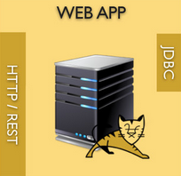
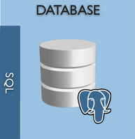
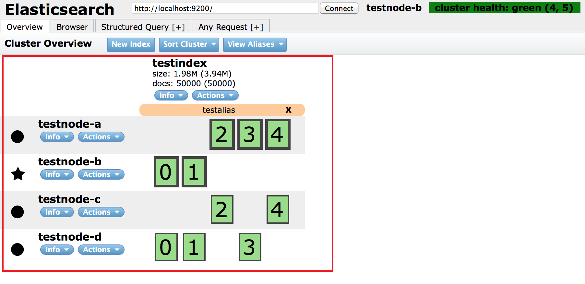
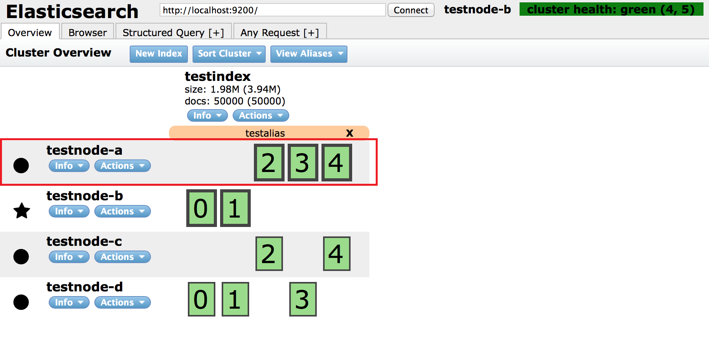
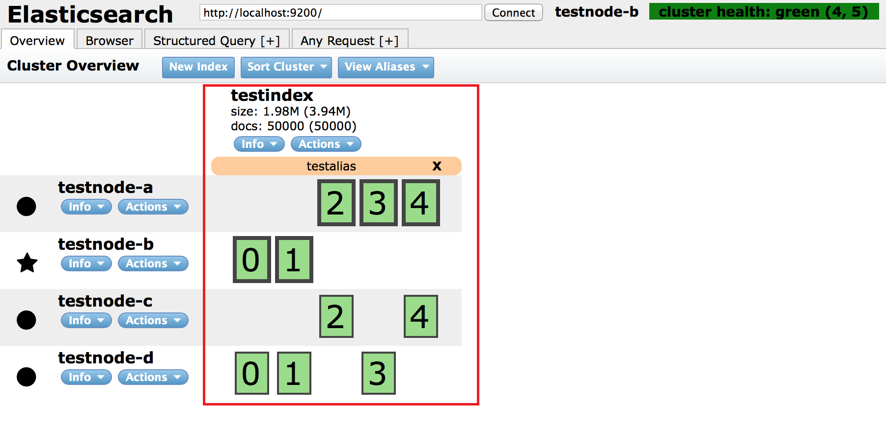
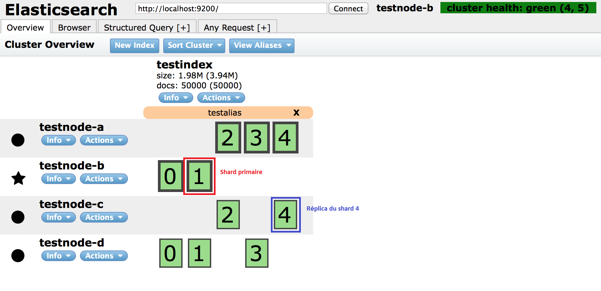
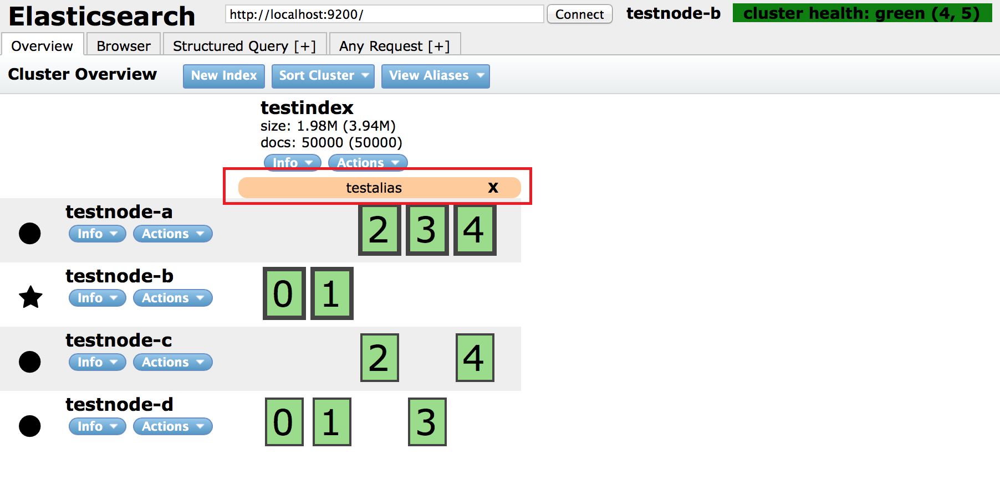

Elasticsearch
13@14
par Maël Gargadennec
Sommaire
- Présentation
- Mise en place
- L'indexation
- La recherche
Ce que c'est
Présentation générale
Moteur de recherche Open-source
Créé en 2009 par Shay Banon
Géré par la société depuis 2012 (précédemment Elasticsearch)
Caractéristiques principales
Distribué, scalable, résilient
RESTful API over HTTP
Basé sur Apache Lucène

Simple à mettre en place
(Quasi) temps réel
Cas d'usages
Recherche full-text*
Analyses de logs
Analyses (tout court)
Data discovery
* Ce que l'on va voir aujourd'hui
Dans votre application


Ce que ce n'est pas
Un outil magique
C'est un moteur !
Un ETL (Extract / Transform / Load)
Vos données --> à vous de les récupérer et mettre en forme proprement !
Un produit spécialisé pour votre use case
Vos besoins + les possibilités du moteur = votre moteur de recherche !
Un produit simple pour les besoins complexes
Vue d'ensemble
Big Picture
Cluster
Un ensemble de noeuds connectés.
Un espace de stockage distribué.
De la puissance de calcul distribuée.
Une sécurité en cas de panne.
Cluster
Node
Une instance Elasticsearch appartenant à un cluster donné.
Node
Index
Corpus de document identifié par un nom unique.
Les indexs sont dispatchés sur différents noeuds (si vous en avez plusieurs)
Index
Shard
Index (au sens Lucene) qui contient une partie des documents indexés au sein d'un même index (au sens Elasticsearch).
Primary shard : premier lieu d'indexation du document
Replica shard : Copie(s) d'un shard. Ceux-ci sont localisés sur un autre node que le primary shard. En cas de panne du shard primary, un des réplicas est promu shard primaire.
Shard
Alias
Regroupements + filtrages de données indexées sur l'ensemble du cluster.
Utilisable de façon transparente pour le client. (= comme un index)
Quelques exemples :
- filtrage sur un type au sein d'un index
- filtrage sur une valeur de propriété
- filtrage sur les documents d'un utilisateur
- regroupements temporels (ex : current_week, last_month, last_seven_days)
- regroupements de plusieurs index
Alias
Fonctionnement d'un cluster
Demo time !
Est-ce adapté à mon besoin ?
Si vous avez un peu de recherche à faire ....
OUI
Mais c'est compliqué à mettre en place, non?
Vous avez un petit dataset
(< à quelques centaines de milliers de documents)
Création d'un node dans votre application
org.elasticsearch
elasticsearch
1.5.1
import org.elasticsearch.client.Client;
import org.elasticsearch.*;
public class BuildMeANodeApplication{
public static void main( String[] args ){
Node node = NodeBuilder.nodeBuilder().node();
Client client = node.client();
//do something
node.close();
}
}Vous avez un gros dataset
Connexion à un cluster existant
wget https://download.elasticsearch.org/elasticsearch/elasticsearch/elasticsearch-1.5.1.tar.gz
tar xzvf elasticsearch-1.5.1.tar.gz
elasticsearch-1.5.1/bin/elasticsearch
import org.elasticsearch.client.Client;
import org.elasticsearch.*;
public class ConnectMeToAClusterApplication{
public static void main( String[] args ){
Settings settings = ImmutableSettings.settingsBuilder()
.put("cluster.name", "myClusterName").build();
Client client = new TransportClient(settings)
.addTransportAddress(
new InetSocketTransportAddress("localhost", 9300)
);
//do something
client.close();
}
}Configuration
##################### Elasticsearch Configuration Example #####################
# This file contains an overview of various configuration settings,
# targeted at operations staff. Application developers should
# consult the guide at .
#
# The installation procedure is covered at
# .
#
# Elasticsearch comes with reasonable defaults for most settings,
# so you can try it out without bothering with configuration.
#
# Most of the time, these defaults are just fine for running a production
# cluster. If you're fine-tuning your cluster, or wondering about the
# effect of certain configuration option, please _do ask_ on the
# mailing list or IRC channel [http://elasticsearch.org/community].
# Any element in the configuration can be replaced with environment variables
# by placing them in ${...} notation. For example:
#
#node.rack: ${RACK_ENV_VAR}
# For information on supported formats and syntax for the config file, see
#
################################### Cluster ###################################
# Cluster name identifies your cluster for auto-discovery. If you're running
# multiple clusters on the same network, make sure you're using unique names.
#
#cluster.name: elasticsearch
#################################### Node #####################################
# Node names are generated dynamically on startup, so you're relieved
# from configuring them manually. You can tie this node to a specific name:
#
#node.name: "Franz Kafka"
# Every node can be configured to allow or deny being eligible as the master,
# and to allow or deny to store the data.
#
# Allow this node to be eligible as a master node (enabled by default):
#
#node.master: true
#
# Allow this node to store data (enabled by default):
#
#node.data: true
# You can exploit these settings to design advanced cluster topologies.
#
# 1. You want this node to never become a master node, only to hold data.
# This will be the "workhorse" of your cluster.
#
#node.master: false
#node.data: true
#
# 2. You want this node to only serve as a master: to not store any data and
# to have free resources. This will be the "coordinator" of your cluster.
#
#node.master: true
#node.data: false
#
# 3. You want this node to be neither master nor data node, but
# to act as a "search load balancer" (fetching data from nodes,
# aggregating results, etc.)
#
#node.master: false
#node.data: false
# Use the Cluster Health API [http://localhost:9200/_cluster/health], the
# Node Info API [http://localhost:9200/_nodes] or GUI tools
# such as ,
# and
# to inspect the cluster state.
# A node can have generic attributes associated with it, which can later be used
# for customized shard allocation filtering, or allocation awareness. An attribute
# is a simple key value pair, similar to node.key: value, here is an example:
#
#node.rack: rack314
# By default, multiple nodes are allowed to start from the same installation location
# to disable it, set the following:
#node.max_local_storage_nodes: 1
#################################### Index ####################################
# You can set a number of options (such as shard/replica options, mapping
# or analyzer definitions, translog settings, ...) for indices globally,
# in this file.
#
# Note, that it makes more sense to configure index settings specifically for
# a certain index, either when creating it or by using the index templates API.
#
# See and
#
# for more information.
# Set the number of shards (splits) of an index (5 by default):
#
#index.number_of_shards: 5
# Set the number of replicas (additional copies) of an index (1 by default):
#
#index.number_of_replicas: 1
# Note, that for development on a local machine, with small indices, it usually
# makes sense to "disable" the distributed features:
#
#index.number_of_shards: 1
#index.number_of_replicas: 0
# These settings directly affect the performance of index and search operations
# in your cluster. Assuming you have enough machines to hold shards and
# replicas, the rule of thumb is:
#
# 1. Having more *shards* enhances the _indexing_ performance and allows to
# _distribute_ a big index across machines.
# 2. Having more *replicas* enhances the _search_ performance and improves the
# cluster _availability_.
#
# The "number_of_shards" is a one-time setting for an index.
#
# The "number_of_replicas" can be increased or decreased anytime,
# by using the Index Update Settings API.
#
# Elasticsearch takes care about load balancing, relocating, gathering the
# results from nodes, etc. Experiment with different settings to fine-tune
# your setup.
# Use the Index Status API () to inspect
# the index status.
#################################### Paths ####################################
# Path to directory containing configuration (this file and logging.yml):
#
#path.conf: /path/to/conf
# Path to directory where to store index data allocated for this node.
#
#path.data: /path/to/data
#
# Can optionally include more than one location, causing data to be striped across
# the locations (a la RAID 0) on a file level, favouring locations with most free
# space on creation. For example:
#
#path.data: /path/to/data1,/path/to/data2
# Path to temporary files:
#
#path.work: /path/to/work
# Path to log files:
#
#path.logs: /path/to/logs
# Path to where plugins are installed:
#
#path.plugins: /path/to/plugins
#################################### Plugin ###################################
# If a plugin listed here is not installed for current node, the node will not start.
#
#plugin.mandatory: mapper-attachments,lang-groovy
################################### Memory ####################################
# Elasticsearch performs poorly when JVM starts swapping: you should ensure that
# it _never_ swaps.
#
# Set this property to true to lock the memory:
#
#bootstrap.mlockall: true
# Make sure that the ES_MIN_MEM and ES_MAX_MEM environment variables are set
# to the same value, and that the machine has enough memory to allocate
# for Elasticsearch, leaving enough memory for the operating system itself.
#
# You should also make sure that the Elasticsearch process is allowed to lock
# the memory, eg. by using `ulimit -l unlimited`.
############################## Network And HTTP ###############################
# Elasticsearch, by default, binds itself to the 0.0.0.0 address, and listens
# on port [9200-9300] for HTTP traffic and on port [9300-9400] for node-to-node
# communication. (the range means that if the port is busy, it will automatically
# try the next port).
# Set the bind address specifically (IPv4 or IPv6):
#
#network.bind_host: 192.168.0.1
# Set the address other nodes will use to communicate with this node. If not
# set, it is automatically derived. It must point to an actual IP address.
#
#network.publish_host: 192.168.0.1
# Set both 'bind_host' and 'publish_host':
#
#network.host: 192.168.0.1
# Set a custom port for the node to node communication (9300 by default):
#
#transport.tcp.port: 9300
# Enable compression for all communication between nodes (disabled by default):
#
#transport.tcp.compress: true
# Set a custom port to listen for HTTP traffic:
#
#http.port: 9200
# Set a custom allowed content length:
#
#http.max_content_length: 100mb
# Disable HTTP completely:
#
#http.enabled: false
################################### Gateway ###################################
# The gateway allows for persisting the cluster state between full cluster
# restarts. Every change to the state (such as adding an index) will be stored
# in the gateway, and when the cluster starts up for the first time,
# it will read its state from the gateway.
# There are several types of gateway implementations. For more information, see
# .
# The default gateway type is the "local" gateway (recommended):
#
#gateway.type: local
# Settings below control how and when to start the initial recovery process on
# a full cluster restart (to reuse as much local data as possible when using shared
# gateway).
# Allow recovery process after N nodes in a cluster are up:
#
#gateway.recover_after_nodes: 1
# Set the timeout to initiate the recovery process, once the N nodes
# from previous setting are up (accepts time value):
#
#gateway.recover_after_time: 5m
# Set how many nodes are expected in this cluster. Once these N nodes
# are up (and recover_after_nodes is met), begin recovery process immediately
# (without waiting for recover_after_time to expire):
#
#gateway.expected_nodes: 2
############################# Recovery Throttling #############################
# These settings allow to control the process of shards allocation between
# nodes during initial recovery, replica allocation, rebalancing,
# or when adding and removing nodes.
# Set the number of concurrent recoveries happening on a node:
#
# 1. During the initial recovery
#
#cluster.routing.allocation.node_initial_primaries_recoveries: 4
#
# 2. During adding/removing nodes, rebalancing, etc
#
#cluster.routing.allocation.node_concurrent_recoveries: 2
# Set to throttle throughput when recovering (eg. 100mb, by default 20mb):
#
#indices.recovery.max_bytes_per_sec: 20mb
# Set to limit the number of open concurrent streams when
# recovering a shard from a peer:
#
#indices.recovery.concurrent_streams: 5
################################## Discovery ##################################
# Discovery infrastructure ensures nodes can be found within a cluster
# and master node is elected. Multicast discovery is the default.
# Set to ensure a node sees N other master eligible nodes to be considered
# operational within the cluster. This should be set to a quorum/majority of
# the master-eligible nodes in the cluster.
#
#discovery.zen.minimum_master_nodes: 1
# Set the time to wait for ping responses from other nodes when discovering.
# Set this option to a higher value on a slow or congested network
# to minimize discovery failures:
#
#discovery.zen.ping.timeout: 3s
# For more information, see
#
# Unicast discovery allows to explicitly control which nodes will be used
# to discover the cluster. It can be used when multicast is not present,
# or to restrict the cluster communication-wise.
#
# 1. Disable multicast discovery (enabled by default):
#
discovery.zen.ping.multicast.enabled: false
#
# 2. Configure an initial list of master nodes in the cluster
# to perform discovery when new nodes (master or data) are started:
#
discovery.zen.ping.unicast.hosts: ["host1", "host2:port"]
# EC2 discovery allows to use AWS EC2 API in order to perform discovery.
#
# You have to install the cloud-aws plugin for enabling the EC2 discovery.
#
# For more information, see
#
#
# See .
# Azure discovery allows to use Azure API in order to perform discovery.
#
# You have to install the cloud-azure plugin for enabling the Azure discovery.
#
# For more information, see .
################################## Slow Log ##################################
# Shard level query and fetch threshold logging.
#index.search.slowlog.threshold.query.warn: 10s
#index.search.slowlog.threshold.query.info: 5s
#index.search.slowlog.threshold.query.debug: 2s
#index.search.slowlog.threshold.query.trace: 500ms
#index.search.slowlog.threshold.fetch.warn: 1s
#index.search.slowlog.threshold.fetch.info: 800ms
#index.search.slowlog.threshold.fetch.debug: 500ms
#index.search.slowlog.threshold.fetch.trace: 200ms
#index.indexing.slowlog.threshold.index.warn: 10s
#index.indexing.slowlog.threshold.index.info: 5s
#index.indexing.slowlog.threshold.index.debug: 2s
#index.indexing.slowlog.threshold.index.trace: 500ms
################################## GC Logging ################################
monitor.jvm.gc.young.warn: 1000ms
monitor.jvm.gc.young.info: 700ms
monitor.jvm.gc.young.debug: 400ms
monitor.jvm.gc.old.warn: 10s
monitor.jvm.gc.old.info: 5s
monitor.jvm.gc.old.debug: 2s
################################## Security ################################
# Uncomment if you want to enable JSONP as a valid return transport on the
# http server. With this enabled, it may pose a security risk, so disabling
# it unless you need it is recommended (it is disabled by default).
#
http.jsonp.enable: true Utilisation du Client Java
Builders !
Builders everywhere!
Utilisation du Client Java
IndexRequestBuilder
client.prepareIndex(String index, String type)
GetRequestBuilder
client.prepareGet(String index, String type, String id)
UpdateRequestBuilder
client.prepareUpdate(String index, String type, String id)
DeleteRequestBuilder
client.prepareDelete(String index, String type, String id)
SearchRequestBuilder
client.prepareSearch(String.. indices)
BulkRequestBuilder
client.prepareSearch(String.. indices)
Utilisation du Client Java
Executer une requête préparée
Synchrone
builder.execute().actionGet()
Asynchrone
builder.execute(listener)
Exemple
Demo time !
L'indexation
Extraire la donnée
Utiliser une approche ETL (Extract / Transform / Load) distincte permet :
- de séparer les problématiques opérationnelles du traitement
- de regrouper la donnée de sources multiples
- de l'enrichir (métadonnées)
- de la transformer (modèle à plat)
- de la charger dans ES unitairement ou par batchs
Stratégies possibles
Indexation totale régulière
Techniques : alias switching
Adapté : indexation rapide + temps réel non requis
Indexation totale régulière + delta par batch
Techniques : alias switching, utilisation de timestamps de dernier passage
Adapté : indexation rapide + temps réel requis
Indexation totale initiale + delta applicatif
Techniques : alias switching, utilisation de timestamps de dernier passage
Adapté : indexation longue + temps réel requis
Attention : vérifier la synchronisation de l'index régulièrement
Modélisation de vos données
Il faut oublier le modèle relationnel !
Adopter le mode de pensée NoSQL : chaque document doit contenir l'ensemble des informations liées.
La redondance est souhaitable
Le stockage est peu cher, la performance est critique !
Ne pas hésiter à mettre plus de données que nécessaires !
Elles seront ainsi accessibles pour la recherche, pour l'affichage et pour les besoins futurs.
Indexer les données
Indexation unitaire
//Avec Jackson
String src = new ObjectMapper().writeValueAsString(object);
client.prepareIndex(indexName, type)
.setSource(src).execute().actionGet();
//Avec une Map
Map author = new HashMap();
author.put("id", 1464134354314);
author.put("firstname", "Isaac");
author.put("lastname", "Asimov");
Map book = new HashMap();
book.put("id", 435145734);
book.put("titre","Fondation");
book.put("releaseYear",1951);
book.put("author",author);
client.prepareIndex(indexName, type)
.setId(book.get("id"))
.setSource(book).execute().actionGet();
Indexer les données
Indexation bulk
Permet d'effectuer N actions sur le cluster avec une unique requête.
client.prepareBulk()
.add(client.prepareIndex(indexName,type).setSource(obj1))
.add(client.prepareIndex(indexName,type).setSource(obj2))
.add(client.prepareIndex(indexName,type).setSource(obj3))
.add(client.prepareIndex(indexName,type).setSource(obj4))
.add(client.prepareIndex(indexName,type).setSource(obj5))
.add(client.prepareIndex(indexName,type).setSource(obj6))
// etc...
.execute().actionGet();
Exemple
Demo time !
La recherche
Exemple !
Demo time !
FAIL ! Ca ne trouve pas les mots accentués !

On m'aurait menti ?
Dictionnaire inversé
Document 1The quick brown fox jumped over the lazy dog
Document 2Quick brown foxes leap over lazy dogs in summer
| Terme | Document 1 | Document 2 |
|---|---|---|
| Quick | X | |
| The | X | |
| brown | X | X |
| dog | X | |
| dogs | X | |
| fox | X | |
| foxes | X | |
| in | X | |
| jumped | X | |
| lazy | X | X |
| leap | X | |
| over | X | X |
| quick | X | |
| summer | X | |
| the | X | |
Analysers
Préparent les contenus envoyés lors de l'indexation et de la recherche
0..N CharFilter : retire ou transforme la source initiale (ex : HTML escape)
1 Tokenizer : découpe le contenu en tokens (ex : sur les espaces)
0 à N TokenFilter : modifie un flux de tokens.
Peut retirer (ex : stopwords), modifier (ex: lowercase, elision) voire ajouter (ex : Edge-NGram, synonymes) des tokens.
Peuvent être configurés sur chaque champ.
Quelques uns fournis et configurables
+ création possible
Paramétrage d'un index
PUT /my_index
{
"analysis":{
"char_filter":{
"&_vers_et":{
"type":"mapping",
"mappings":[
"&=> et "
]
}
},
"tokenizer":{
},
"filter":{
"mes_stopwords":{
"type":"stop",
"stopwords":[
"foo",
"bar"
]
}
},
"analyzer":{
"mon_analyzer":{
"type":"custom",
"char_filter":[
"html_strip",
"&_vers_et"
],
"tokenizer":"standard",
"filter":[
"lowercase",
"mes_stopwords"
]
}
}
}
}
API d'analyse
Mapping
{
"mon_type": {
"properties": {
"id": {
"type": "string",
//Pas d'analyze : on veut le retrouver via un match exact
"index": "not_analyzed"
},
"titre": {
"type": "string",
//Analyzer français par défaut
"analyzer": "french"
},
"sousTitre": {
"type": "string",
//Analyzer custom
"analyzer": "mon_analyzer"
},
"year": {
//Pas réellement besoin d'analyse sur un type primitif
"type": "integer"
},
"createdAt": {
"type": "date",
//ES gère bien les dates tout seul
"format": "dateOptionalTime"
}
}
}
}
Queries
Permettent d'effectuer une recherche (si si !) textuelle, basée sur les analysers.
Les builders permettent de composer différents niveaux de requêtes à l'aide de la BoolQuery.
Match Query, Multi Match Query, Bool Query, Boosting Query, Common Terms Query, Constant Score Query, Dis Max Query, Filtered Query, Fuzzy Like This Query, Fuzzy Like This Field Query, Function Score Query, Fuzzy Query, GeoShape Query, Has Child Query, Has Parent Query, Ids Query, Indices Query, Match All Query, More Like This Query, Nested Query, Prefix Query, Query String Query, Simple Query String Query, Range Query, Regexp Query, Span First Query, Span Multi Term Query, Span Near Query, Span Not Query, Span Or Query, Span Term Query, Term Query, Terms Query, Top Children Query, Wildcard Query, Minimum Should Match, Multi Term Query Rewrite, Template Query
Filters
Permettent de filtrer (si, si, j'insiste) les données par des valeurs EXACTES.
Les builders permettent de composer différents niveaux et conditions de filtrage (boolFilter, orFilter, andFilter)
S'appliquent en amont de la recherche, ainsi que sur les aggrégations.
And Filter, Bool Filter, Exists Filter, Geo Bounding Box Filter, Geo Distance Filter, Geo Distance Range Filter, Geo Polygon Filter, GeoShape Filter, Geohash Cell Filter, Has Child Filter, Has Parent Filter, Ids Filter, Indices Filter, Limit Filter, Match All Filter, Missing Filter, Nested Filter, Not Filter, Or Filter,Prefix Filter, Query Filter, Range Filter,Regexp Filter, Script Filter, Term Filter, Terms Filter, Type Filter
Aggregations
Permettent de regrouper des données dans des "buckets".
Peuvent être nested (composés) pour avoir plusieurs niveaux d'aggrégations.
AggregationBuilders
.terms("byYear")
.field("year")
.size(25)
.subAggregation(
AggregationBuilders
.terms("byCategory")
.field("category")
.size(5)
Percolation
Permet de stocker des RECHERCHES et d'être prévenu lorsqu'un document "trouvé" par cette requête est indexée.
Ex : Emailing sur requêtes préférées, comparaison
Plugins
Rajoute des fonctionnalités (analysers, endpoints, ...)
Rajoute des interfaces (requêtage, monitoring, management, ...)sur l'API.
bin/plugin -i mobz/elasticsearch-headTHE END
Des questions?
Quelques documents :